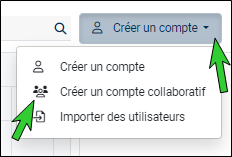

Créer un compte collaboratif
Un compte collaboratif représente un espace de travail partagé entre plusieurs utilisateurs. Il permet de travailler sur des études communes tout en ayant une traçabilité sur les actions effectuées par chaque utilisateur.
REMARQUE : La création de comptes collaboratifs n'est pas disponible sur les serveurs Connect (solution hébergée chez le client). Pour plus d'informations, contactez votre interlocuteur commercial.
 Créer un compte collaboratif
Créer un compte collaboratif
Pour créer un compte collaboratif, procédez comme suit :
-
Connectez-vous sur votre compte administrateur.
-
Depuis l'onglet Comptes, cliquez sur la petite flèche à droite du bouton Créer un compte puis sur Créer un compte collaboratif.

-
Renseignez les informations demandées.
-
Nom du compte (Seuls les lettres, chiffres, tirets et underscores sont acceptés).
-
Adresse e-mail.
-
Date d'ouverture / fermeture.
-
(Facultatif) Profil (Nom de la société, Nom, Prénom, téléphone et langue).
-
Droits : paramétrez les droits du compte, crédits réponses, crédits e-mails, nombre d'utilisateurs report, etc..).
-
Limites : paramétrez le nombre de réponses par enquête / nombre de questions par enquête / nombre d'enquêtes.
-
-
Cliquez sur ENREGISTRER, pour valider.
Un e-mail est automatiquement envoyé pour vous demander de confirmer l'adresse e-mail associé au compte.

REMARQUE : Il n'est pas nécessaire de définir un mot de passe pour un compte collaboratif.
En effet, vous devez vous connecter à partir du compte utilisateur qui y est associé pour y accéder.
Ajouter des accès à un compte collaboratif
Une fois que le compte collaboratif est créé, vous pouvez ajouter les utilisateurs/comptes qui peuvent y accéder (Consulter la procédure à suivre pour créer des comptes ).

REMARQUE : Un même utilisateur peut avoir accès à plusieurs comptes collaboratifs.
Pour ce faire, trois possibilités s'offrent à vous :
-
Créer un utilisateur
-
Indiquez le nom de l'utilisateur ainsi que son adresse email.
-
(facultatif) Remplissez les informations sur le profil de l'utilisateur.
-
Cliquez sur Créer l’utilisateur.
L'utilisateur créée est automatiquement associé au compte collaboratif.
-

-
Rattacher des utilisateurs existants
Vous pouvez rattacher des utilisateurs existants au compte collaboratif, pour ce faire
-
Cliquez sur le bouton Rattacher des utilisateurs existants.
-
Sélectionnez les utilisateurs à ajouter.
Il est possible de filtrer la liste des utilisateurs à travers les colonnes Identifiant et Email.
-
Cliquez sur Valider.
-
-
Importer des utilisateurs
-
Cliquez sur le bouton Importer des utilisateurs.
-
Cliquez sur Sélectionner le fichier... puis sélectionnez le fichier à importer.
REMARQUE : Type de fichier autorisé (".txt", ".csv", ".xlsx")
Le fichier doit obligatoirement comporter les deux colonnes suivantes :
-
Login : Identifiant de l'utilisateur.
-
Email : Adresse e-mail de l'utilisateur.
Colonnes facultatives :
-
firstname / lastname : Prénom & nom de l'utilisateur.
Un récapitulatif s'affichera suite à l'import du fichier (nombre d'utilisateurs qui seront crées, messages d'erreur / avertissements en cas de problème - par exemple un identifiant déjà existant).
-
-
Cliquez sur Créer.
Les utilisateurs importés sont automatiquement associés au compte collaboratif.
REMARQUE : Lorsqu’un utilisateur est créé, il doit confirmer son adresse e-mail et définir son mot de passe en cliquant sur le lien reçu par e-mail.. Le lien est valable pendant 96 heures.
-


La liste d'utilisateurs ayant accès au compte collaboratif est visible depuis le panneau latéral de droite.
 Supprimer l'accès au compte collaboratif pour un utilisateur
Supprimer l'accès au compte collaboratif pour un utilisateur
Pour supprimer l'accès au compte collaboratif pour un utilisateur, procédez comme suit :
-
Sélectionnez le compte collaboratif depuis la liste des comptes.
-
Cliquez sur le bouton Gérer les utilisateurs.
-
Cliquez sur l'icône qui correspond à la ligne de l'utilisateur à supprimer.
-
Une fenêtre de confirmation s'affiche, cliquez sur Supprimer l'accès pour valider.
 Utilisation du compte collaboratif coté utilisateur
Utilisation du compte collaboratif coté utilisateur
L'utilisateur peut à tout moment basculer entre les différents comptes collaboratifs auxquels il a accès.
Pour ce faire :
-
Cliquez sur le nom de votre compte.
-
Cliquez sur Changer de compte.
-
Puis sélectionnez le compte à utiliser.

Prévention des conflits
Il est fortement déconseillé de travailler à plusieurs simultanément dans un même environnement. En effet vous risquez de perdre toutes les modifications effectuées.
Lorsque plusieurs utilisateurs d'un compte collaboratif accèdent simultanément au même environnement d'une enquête, un indicateur du nombres d'utilisateurs connectés en simultané (hors utilisateur actuel) s'affichera en haut à droit de l'écran.

Un message d'avertissement s'affichera également en fonction de l'environnement :
-
à l'enregistrement d'une vue dans l'environnement d'analyse.
-
à l'arrivée d'un utilisateur dans la partie Conception (conception d'enquête en ligne).